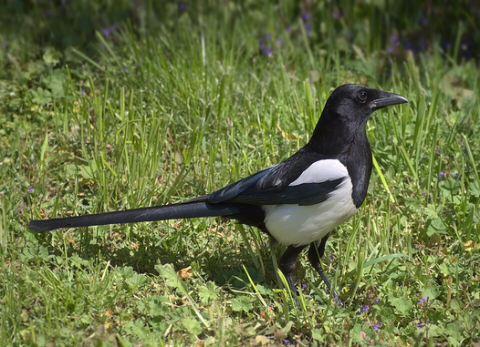

Ác Là
Pica Pica
Một loài chim định cư trong khu vực châu Âu, phần lớn châu Á, tây bắc châu Phi. Nó là một trong vài loài chim trong họ Quạ (Corvidae) có tên gọi chung là ác là và thuộc về nhánh phân tỏa cận Bắc cực của ác là "đơn sắc".

Công lục Đông Dương
Pavo muticus imperator
Đây là loài chim hoang dã có bộ lông sặc sỡ lại múa đẹp, dễ nuôi và càng phổ biến, người ta nuôi chim công để thưởng ngoạn. Chúng là biểu tượng cho sự quyền quý.

Công lục Đông Dương
Pavo muticus imperator
Đây là loài chim hoang dã có bộ lông sặc sỡ lại múa đẹp, dễ nuôi và càng phổ biến, người ta nuôi chim công để thưởng ngoạn. Chúng là biểu tượng cho sự quyền quý.